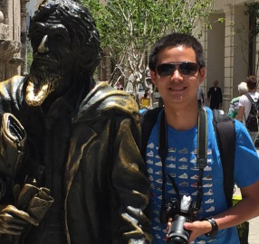

Henry Han
B.S. College of William & Mary (2019)

Phone: 757-332-0189
Email: zhan01@email.wm.edu
Mailing Address:
CSU 2433, PO Box 8793
College of William and Mary
Williamsburg, VA, 23187, USA
Skills
- Language: Chinese, Cantonese, English, Spanish
- Computer: Microsoft Access, Excel, PowerPoint, HTML/CSS, R (IP), Python (IP), Java (IP), LaTeX (IP)
- Certification: Training the Street (Corporation Valuation and Financial Modeling), CPR
Experience
- Studying Chemistry and Accounting, GPA 3.9/4.0, graduating in May 2019.
- Chemistry research with various professors (September 2016 - Present)
- Resident assistant (August 2016 - Present)
- Gibbs Accounting Society VP (June 2016 - Present)
- Miller Entrepreneurship Center Events Committee (September 2017 - Present)
- Studied abroad in Hong Kong and Singapore (Summer 2017)
- Studied Broadway theater and literary journalism at Columbia University (Summer 2016)
Research Interests
Overview
My research interests lie in bioorganic/medicinal chemistry. Previously I have worked in Professor Doug Young's Biochemistry lab, primarily involved in organic synthesis and unnatural amino acids, and I loved how chemistry and biology can work together. I also worked with Professor Dana Lashley on synthesis of quinone products to test anti-cancer effects. I hope that my research will have biological or medicinal implications by employing the tools of organic synthesis and analytical chemistry.
View the faculty page for Dr. Doug, Y. and Dr. Lashley, D.
Traditional Chinese Medicine
Traditional Chinese Medicine (TCM, 中医) has over 2500 years of history and I am interested in the practice of herbal medicines. Unlike western medicines, herbal medicines have natural molecules that could be found in plants. My approaches are two fold: (1) by employing chromatography and mass spectrometry to explore chemical compositions of traditional medicinal formula; (2) by employing organic synthesis of natural molecules to explore potential anti-analgesic, anti-cancer effects.
Courses
- CHEM 206 - Organic Chemistry I
- CHEM 307 - Organic Chemistry II
- CHEM 335 - Freshman Honors Chemistry
- CHEM 414 - Biochemistry
- MATH 351 - Probability & Statistics for Scientists
- SPCH 201 - Public Speaking
Writings (Publications)
Lab Reports
- Han, Zhenyu "Gas Chromatography Evaluation of HELP", Instrumental Analysis Lab, September 2017.
Travel Writing
- Han, Zhenyu "Lost in Williamsburg", Odyssey Online, July 2016.
Fun Stuff
- GPA Calculator Download Version 0.01 (.xlsx)
- Support course grade formats from Banner/Course list
- Auto-calculate GPA with more precision than Banner
- Support Pass/Fail/Transfer grades that do not count towards GPA but graduation credits
- Support research credits that do not count towards graduation credits but GPA
- Excellent tool for GPA goal setting
- HETP Matrix Equation Solver Download Version 1.0 (.xlsx)
- Excellent tool for calculating Height Equivalent to the Theoretical Plate (HETP) in Chromatography
- Problem solver for Analytical Chemist!